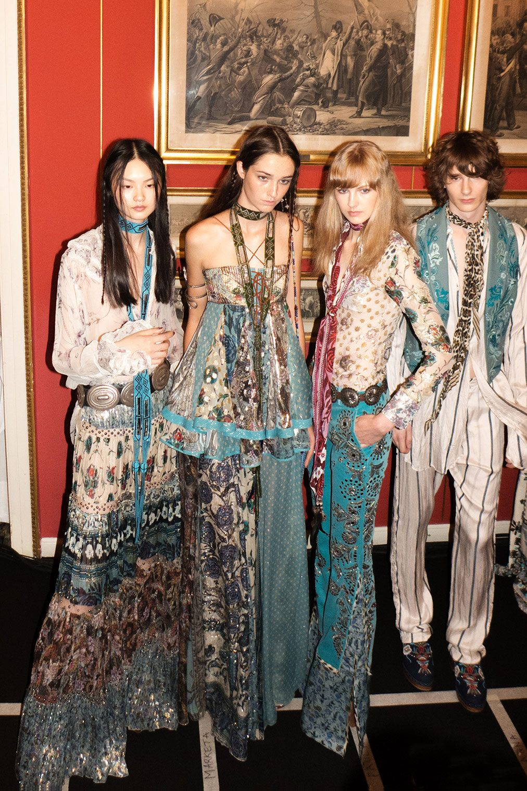
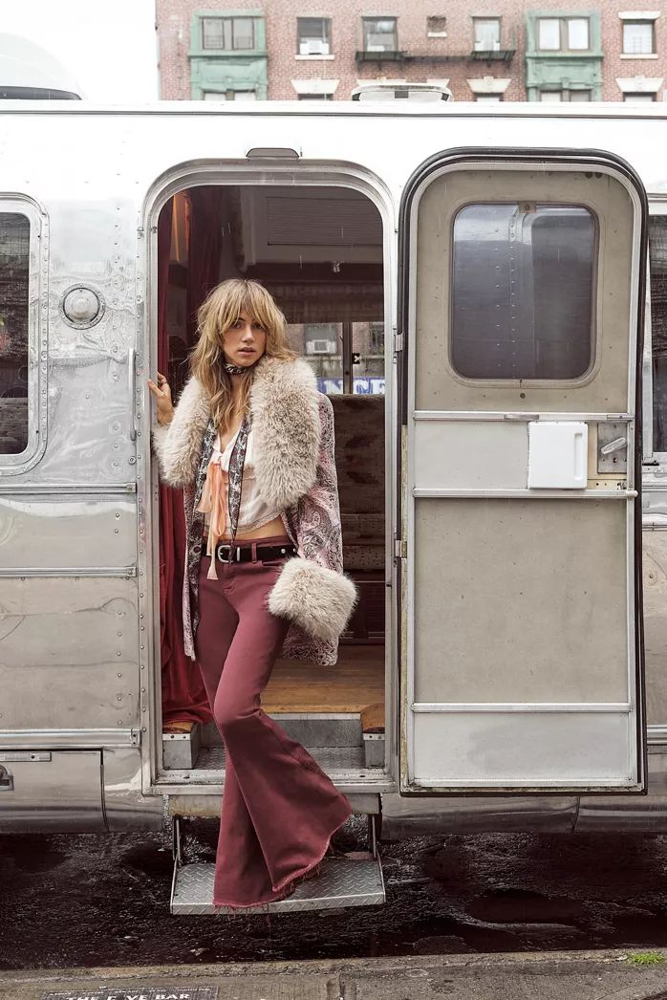
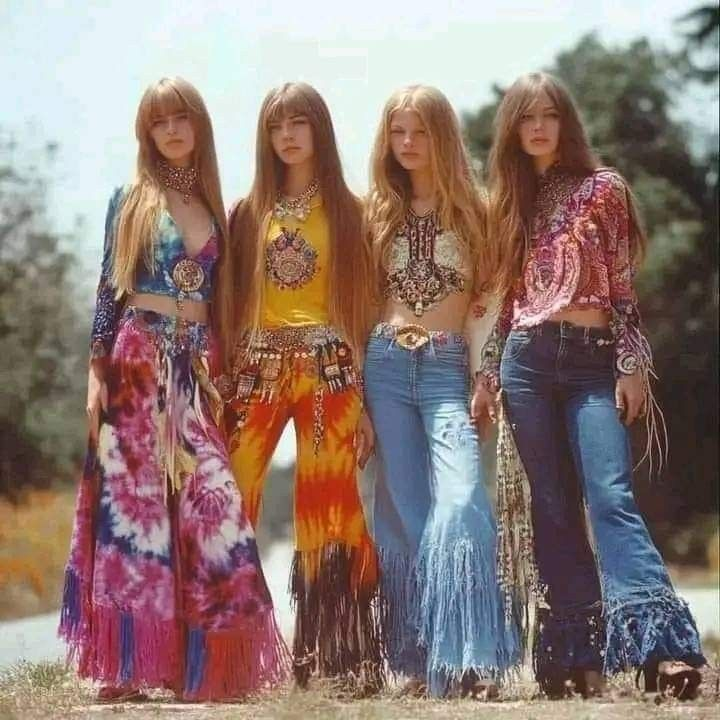
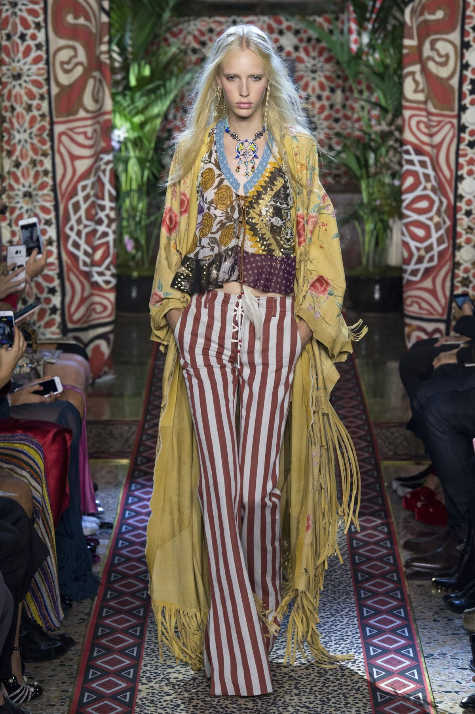
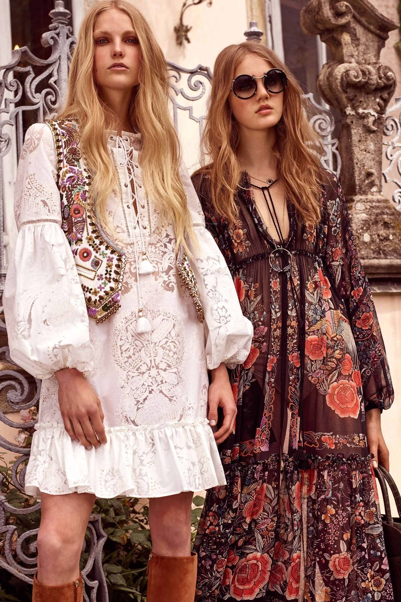

THE BOHEMIAN STYLE, OFTEN TERMED 'BOHO CHIC', IS A FASHION AND LIFESTYLE CHOICE CHARACTERIZED BY ITS UNCONVENTIONAL AND FREE-SPIRITED ESSENCE. WHILE ITS PRECISE ORIGINS ARE DEBATED, BOHEMIAN STYLE IS BELIEVED TO HAVE BEEN INFLUENCED BY THE NOMADIC LIFESTYLE OF THE ROMANI PEOPLE DURING THE LATE 18TH CENTURY TO THE EARLY 20TH CENTURY. THE TERM 'BOHEMIAN' ITSELF DERIVES FROM THE FRENCH 'BOHÉMIEN', ORIGINALLY ASSOCIATED WITH THE ROMANI COMMUNITY DUE TO A HISTORICAL MISCONCEPTION THAT THEY ORIGINATED FROM BOHEMIA, A REGION IN THE CZECH REPUBLIC.
CONTEMPORARY BOHEMIAN FASHION INCLUDES FLOWING FABRICS, VIBRANT COLORS, AND NATURAL, WOVEN MATERIALS INSTEAD OF KNITS. THIS STYLE DRAWS INSPIRATION FROM VARIOUS SOURCES, INCLUDING THE COUNTERCULTURE MOVEMENTS OF THE 1960S AND 1970S, REMINISCENT OF THE ATTIRE WORN BY ATTENDEES OF THE INAUGURAL WOODSTOCK MUSIC FESTIVAL.


The Bohemian subculture has been closely affiliated with predominantly male artists and intellectuals. The female counterparts have been closely connected with the grisettes, young women who combined part-time prostitution with various other occupations. In the first quarter of the 19th century, the term "grisette" also referred to independent young women. They often worked as seamstresses or milliner's assistants and frequented Bohemian artistic and cultural venues in Paris. Many grisettes worked as artist models, often providing sexual favors to the artists in addition to posing for them. During the time of King Louis-Philippe, they came to dominate the Bohemian modeling scene.
Due to the role and influence they had on 19th century French art, the grisette became a frequent character in French fiction. However, the grisettes have been mentioned as early as 1730 by Jonathan Swift. The term "grisette" in poetry signified qualities of both flirtatiousness and intellectual aspiration. George du Maurier based large parts of Trilby on his experiences as a student in Parisian Bohemia during the 1850s.
The History and Boho Style Aesthetics
Bohemian fashion emerged in the early 19th century as a cultural movement led by artists, writers, and intellectuals who sought to break free from society's rigid fashion standards. These "Bohemians" embraced a more free-spirited and unconventional way of life, rejecting the constraints of materialism and commercialism. Their lifestyle fostered a new aesthetic centered on creativity, individualism, and a deep connection to nature. This ethos of self-expression and nonconformity laid the foundation for what we now recognize as boho fashion, an enduring style that continues to inspire modern fashion today. Some Boho fashion brands we like include Farm Rio, Anthropology, and Flo&Frankie.
One key reason for the enduring success of Bohemian fashion is its versatility. Boho style allows for flexible combinations of different pieces, whether one prefers a simple dress, blouse, trousers, or skirt, or opts for more elaborate and layered ensembles. This adaptability is central to Boho fashion, which celebrates individuality and a free-spirited approach to personal style.